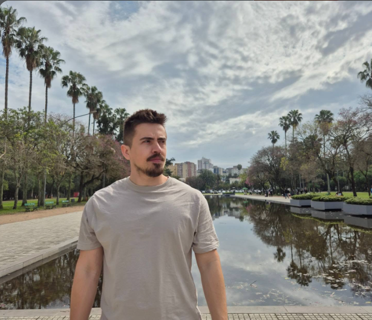

O começo, perto da operação
No Exército e na Rota Agrícola, construí uma base prática com comunicações, equipamentos, manutenção e logística.
Suporte técnico, infraestrutura de TI e redes
Baixar currículo ↓
Minha trajetória passa por comunicação, manutenção, redes e sistemas. Comecei cuidando de equipamentos e conectividade; com o tempo, aproximei esse conhecimento das pessoas, ajudando equipes e clientes a resolverem problemas com mais segurança e tranquilidade.
No Exército e na Rota Agrícola, construí uma base prática com comunicações, equipamentos, manutenção e logística.
Na Osirnet, DoctorNet e CIGAM, ampliei minha experiência em conectividade, ambientes de TI e suporte a usuários e clientes.
Na Bling, atuo no suporte técnico a ERP, conectando análise de incidentes, contexto fiscal e comunicação consultiva.